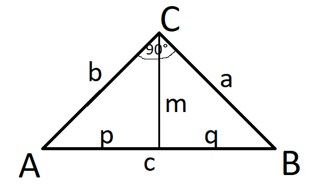

Másodfokú egyenlet képlet
x1,2 = -b ± √b2 -4ac
ㅤㅤㅤㅤㅤ2a
Trigonometria
Heron képlet (Háromszög területe)
T = √s *(s-a)(s-b)(s-c)
s = a + b + c
ㅤㅤㅤ2
Magasságtétel

m = √p * q
b = √p * c
a = √q * c
Sinus, Cosinus, Tangens és Cotangens

Sin Cos táblázat

Kombinatorika
Permutáció
Ha adott ,n' elemet minden lehetséges módon sorrendbe rakunk, akkor permutációról beszélünk. Ha az összes elem különböző akkor ismétlés nélküli permutációról beszélünk.
pl.: Hány lehetséges módon lehet egymás mellé letenni a piros, sárga, zöld és kék színt?
n! = 4! = 4 * 3 * 2 * 1 = 24
Ha az elemek között vannak azonosak, akkor ismétléses permutációról beszélünk.
pl.: A MATIKA szó betűiből hány szót lehet kirakni?
ㅤㅤㅤn!ㅤㅤㅤ = ㅤ6!ㅤ = 720 = 360
ism.1! * ism.2!ㅤ ㅤ2! 2
ism. = ismétlődő
Variáció
Ha ,n' különböző elem közül minden lehetséges módon kiválasztunk ,k' elemet úgy, hogy a sorrend is fontos, akkor variációról beszélünk.
pl.: Futóversenyen futnak 8-an. Hányféle képpen végezhetnek az 1., 2. és 3. helyen?
ㅤn!ㅤ = 8! = 8! = 8 * 7 * 6 * 5! = 8 * 7 * 6 = 336
(n-k)! ㅤ (8-3)! 5!ㅤㅤㅤ 5!
Abban az esetben, ha ismétlődés lehetséges, vagy ugyanaz az elem többször fordulhat elő és a sorrend is számít, akkor ismétléses variációról beszélünk.
pl.: Egy pénzdarabbal 3 dobást végzünk. Hányféle dobássorozat lehetséges, ha a dobások sorrendjét nem vesszük figyelembe?
(A pénzérmének 2 oldala van)
nk = 23 = 8
Kombináció
Ha ,n' különböző elem közül szeretnénk kiválasztani ,k' elemet, de az elemek sorrendjére nem vagyunk tekintettel, akkor kombinációról beszélünk.
pl.: 8 kártyalap közül hány féle képpen húzhatunk ki 5-öt, ha a sorrendet nem vesszük figyelembe?
olvasd: ,n' alatt a ,k'ㅤ(nk) = ㅤn! ㅤ = (85) = ㅤㅤ8!ㅤㅤ = ㅤ8!ㅤ = 8 * 7 * 6 * 5! = 56
ㅤㅤㅤㅤㅤㅤㅤㅤㅤㅤㅤㅤㅤk! * (n-k)!ㅤㅤㅤㅤ 5! * (8-5)! ㅤ5! * 3!ㅤ 5! * 3 * 2 * 1
Sorrend nem számít, de lehet ismétlődés is.
pl.: Négy db 5 forintossal hány különböző dobás lehetséges, ha a sorrend nem számít és ismétlődhet?
(n +kk - 1)
A lehetséges esetek száma: fej, írás (2)
n = 2
Hányszor végezzük el: 4 dobás
k = 4
(n +kk - 1) = (2 +44 - 1) = (54) = (nk) = ㅤ5!ㅤ = 5
ㅤㅤㅤㅤㅤㅤㅤㅤㅤㅤㅤㅤㅤㅤㅤㅤㅤㅤㅤㅤㅤ4!
Valószínűség számítás
Olyan jelenségekkel foglalkozik, amelyek azonos körülmények között többször is megimételhető.
pl.: Mennyi az esélye hogy egy kockával pont hatot dobunk?
p = k
ㅤㅤ n
k = kedvező esetek száma (1 db, amikor 6-os)
n = lehetséges esetek száma (6db, amennyi a kocka oldala)
p = 1 = 0,16 * 100 = 16,6% az esélye, hogy pont 6-ost dobunk.
ㅤㅤ 6